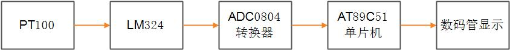
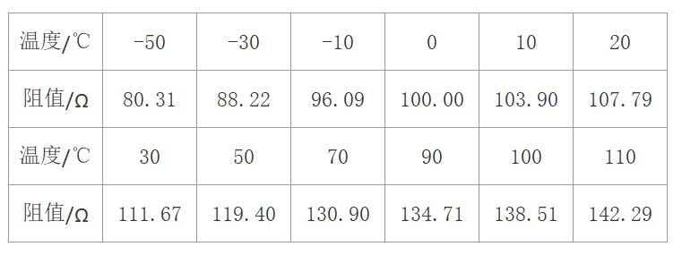

热敏电阻传感器
设计方案
- 铂热电阻PT100的阻值会随着温度的变化而改变。 根据厂家提供PT100在各温度下电阻值值的分度表，通过向PT100输入稳恒电流，再通过A/D转换后测PT100两端电压，即得到PT100的电阻值，进而算出当前的温度值
- 采用2.55mA的电流源对PT100进行供电，然后用运算放大器LM324搭建的同相放大电路将其电压信号放大25倍后输入到AD0804中。利用电阻变化率0.385Ω/℃的特性，计算出当前温度值，并利用AT89C51单片机，将温度显示在LED屏中
- 热敏电阻传感器项目设计总体设计流程图如图所示
- 
基础知识学习
- PT100
- 铂电阻是用很细的铂丝绕在云母支架上制成，是国际公认的高精度测温标准传感器。因为铂电阻在氧化性介质中，甚至高温下其物理、化学性质都非常稳定，因此它具有精度高、稳定性好、性能可靠的特点。铂电阻在中温(-200～650℃)范围内得到广泛应用。 目前市场上已有用金属铂制作成的标准测温热电阻，如PT100、PT500、PT1000等。它的电阻—温度关系的线性度非常好,在-200～650℃温度范围内线性度已经非常接近直线
- 铂电阻的测量精度、测量范围、线性度等特性都非常好，pt100是铂热电阻，它的阻值会随着温度的变化而改变。PT后的100即表示它在0℃时阻值为100欧姆， 在100℃时它的阻值约为138.5欧姆
- 电阻与温度的关系：R=aT+100
- 常用的Pt电阻接法有三线制和两线制，其中三线制接法的优点是将PT100的两侧相等的的导线长度分别加在两侧的桥臂上，使得导线电阻得以消除。常用的采样电路有两种：一为桥式测温电路，一为恒流源式测温电路。 本设计采用恒流源式测温电路。电路接线如图
- A/D转换
- 模数转换（Analog to Digital Conversion）是输入模拟量，输出一个与模拟量相对应的数字量。例如参考电压VREF为5V，采用8位的模数转换器时，当输入电压为0V时，输出的数字量为0000 0000，当输入的电压为5V时，输出的数字量为1111 1111。当输入的电压从从0V到5V变化时，输出的数字量从0000 0000到1111 1111变化。 这样每个输入电压值对应一个输出数字量，即实现了模数转换
- ADC0804
- 如图所示为ADC0804芯片
- 其中CS脚是芯片片选信号，低电平有效。在外接多个ADC0804芯片时，该信号可以作为选择地址使用，通过不同的地址信号使能不同的ADC0804芯片，从而可以实现多个ADC通道的分时复用
- RD脚为启动ADC0804进行ADC采样，信号由低电平变成高电平时，触发一次ADC转换
- WR=0时，DAC0804把转换完成的数据加载到DB口，可以通过数据端口DB0～DB7读出本次的采样结果
- VIN+和VIN-是模拟电压输入端，当输入的模拟电压信号存在“零点漂移电压”时，可在VIN-接一等值的零点补偿电压，变换时将自动从VIN+中减去这一电压
- INTR是转换结束输出信号，低电平有效。实际应用时，该引脚应与微处理器的外部中断输入引脚相连，当产生信号有效时，还需等待INTR=0才能正确读出A/D转换结果，若ADC0804单独使用，则可以将引脚悬空
- ADC0804，实现一次ADC转换主要包含下面三个过程
- 1.启动转换：在信号为低电平的情况下，将引脚先由高电平变成低电平，经过至少t延时后，再将引脚拉成高电平，即启动了一次AD转换。(注：ADC0804使用手册中给出了要正常启动AD转换的低电平保持时间)
- 延时等待转换结束：由拉低信号启动AD采样后，经过1到8个Tclk+INTERNALTc延时后，AD转换结束，因此，启动转换后必须加入一个延时以等待AD采样结束
- 3.读取转换结果：采样转换完毕后，在信号为低的前提下，将脚由高电平拉成低电平后，经过的延时即可从DB脚读出有效的采样结果
- 对采样值进行运算变换，换算出实际的滑动变阻器输入电压值。对于任何一个A/D采样器而言，其转换公式为： V=(Dsample/Dmax)×Vref
- 放大模块
- M324系列器件带有差动输入的四运算放大器。与单电源应用场合的标准运算放大器相比，它们有一些显著优点。该放大器可以工作在低到3.0伏或者高到32伏的电源下，静态电流为MC1741的静态电流的五分之一。 共模输入范围包括负电源，因而消除了在许多应用场合中采用外部偏置元件的必要性。
- LM324系列由四个独立的，高增益，内部频率补偿运算放大器，其中专为从单电源供电的电压范围经营。从分裂电源的操作也有可能和低电源电流消耗是独立的电源电压的幅度
- ADC0804的分辨率度是5/255=0.0196。要使精度达到0.5℃，温度增加1℃时ADC至少要增加1。pt100温度在-50℃~110℃输出电压变化范围要大于5*160/255=3.138。 所以模拟信号应在3.318v~5v之间。所以放大倍数应该大于3.138/0.1580=19.9小于5/0.1580=31.6。所以设计放大25倍。
- LED显示
- 常见的LED数码管为“8”字型的，共计8段。每一段对应一个发光二极管。有共阳极和共阴极两种，如图21所示。共阴极发光二极管的阴极连在一起，通常公共阴极接地。当阳极为高电平时，发光二极管发光。 同样，共阳极发光二极管的阳极连接在一起，公共阳极接正电压，当某个发光二极管的阴极接低电平时，发光二极管发光，显示相应的段。

- LED数码管中还有一个圆点型发光二极管，用于显示小数点。通过七个发光二极管亮暗的不同组合，可以显示各种数字。为了使数码管显示不同的符号或数字，实际上是确定哪些段发光、哪些段不发光，就要为LED数码管提供段码（字型码）
- 公式推导
- 1. 铂电阻的阻值和温度的线性光系由标准测试仪器得出:电阻与温度的关系：R=aT+100，a大约为0.3815，R=0.3815T+100
- 
- 2. ADC0804是八位ADC，8位的ADC时，分辨率为5V/256＝19.5mV（也就是说当输入的模拟电压值每增加19.5mV，则输出的ADC的数字电压增加1
- 3.如果ADC显示精度0.5℃以上。LM324应该设计放大25倍。这个在前文中已经推导过
- 4.ADC的数字电压=（IR(PT的电压，i=2.55mA，R=0.3815T+100)*25(LM324的放大倍数)-5v的基准电压）*1000/19.5变化的数字电压。 ADC的数字电压和温度的标准关系为:1.247*T+70.51=数字电压。实际测试中,这些不是线性关系，需要根据实际的数据进行统计得出大概的换算公式。这里给出了标准的理想的换算公式
项目实现
- 程序设计
- 此程序流程图如图所示
- 代码实现如下
#include
#include #define uchar unsigned char #define uint unsigned int #define ad0_7 P1 //AD数据口 sbit cs=P2^4; //片选信号，低电平有效，控制芯片的启动和结果读取 sbit rd=P2^7; //读数据控制，低电平有效 sbit wr=P2^6; //AD启动控制，上升沿有效 sbit intr=P2^5; //AD转换完成输出低电平 uchar i; uchar led[11]={ 0x3F, //"0" 0x06, //"1" 0x5B, //"2" 0x4F, //"3" 0x66, //"4" 0x6D, //"5" 0x7D, //"6" 0x07, //"7" 0x7F, //"8" 0x6F, //"9" 0x40, //"-" }; uchar dat_AD[4]={0}; void start_ad(void) { cs=0; //允许AD wr=0; _nop_(); wr=1; //WR由低变高时启动AD转换 while(intr); //等待转换完成，低电平有效 cs=1; //等待转换完成，低电平有效 } read_ad() { uint ad_data; ad0_7=0xff; cs=0; //允许读 rd=0; //读取转换数据结果 _nop_(); ad_data=ad0_7; //把数据存到AD——data中 rd=1;cs=1; //停止读取AD return(ad_data); } void data_shout(uint ad_data) { float temp; uint T; if(ad_data<79) { temp=614.422-7.811*ad_data; T=(uint)temp; dat_AD[0]=10; } //负温度,dat_AD[0]中为温度符号数 else if(ad_data<=204) { temp=7.990*ad_data-628.491; T=(uint)temp; dat_AD[0]=T/1000; } //正温度 else if(ad_data>204) { temp=8.124*ad_data-655.742; T=(uint)temp; dat_AD[0]=T/1000; } //ad_data=T; dat_AD[1]=T%1000/100; dat_AD[2]=T%100/10; dat_AD[3]=T%10; } void disp() { switch(i){ case 0: P0=0xfe;P3=led[dat_AD[0]];i++;break; case 1: P0=0xfd;P3=led[dat_AD[1]];i++;break; case 2: P0=0xfb;P3=led[dat_AD[2]]|0x80;i++;break; case 3: P0=0xf7;P3=led[dat_AD[3]];i=0;break; } } void t0init() { TMOD=0x01; TH0=(65535-2000)/256; TL0=(65535-2000)%256; EA=1; ET0=1; TR0=1; } void Time0( ) interrupt 1 { TH0=(65535-2000)/256; TL0=(65535-2000)%256; disp(); } void main(void) { t0init(); while(1) { start_ad(); data_shout(read_ad()); } } - proteus仿真
- 按照前文所述，我们可以连接出热敏电阻传感器项目的原理图，如图所示

- 将程序加载到芯片中，运行,温度成功显示在LED屏上.